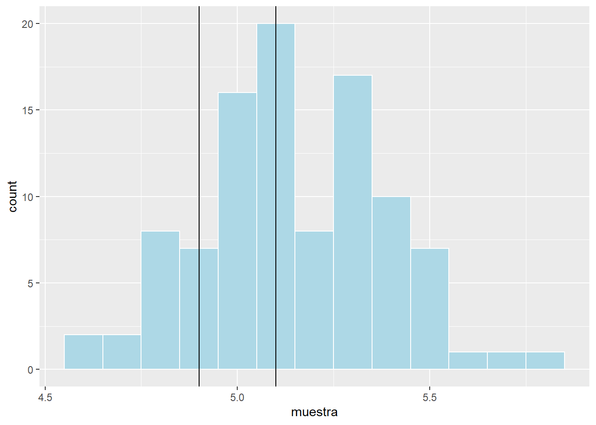
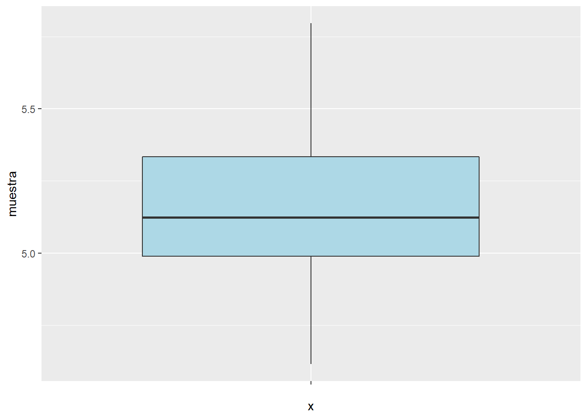
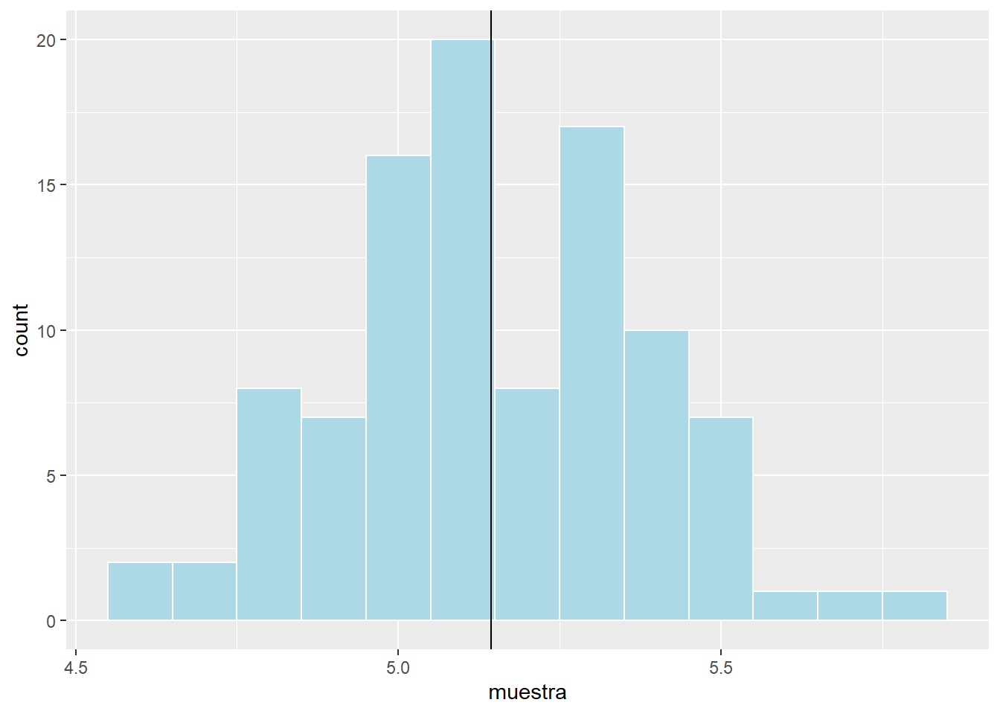

ChurraTech, una empresa del Polígono Industrial de Villachurras de Merinas, fabrica, entre otras cosas, pantallas de 5 pulgadas para teléfonos móviles. En los últimos meses, han tenido mas devoluciones que nunca de clientes que afirman que las pantallas no se pueden ajustar de ninguna manera.
ChurraTech necesita estar segura de que el proceso de fabricación de sus pantallas está bien calibrado hacia el tamaño de 5 pulgadas con una desviación máxima de una décima de pulgada porque, en el proceso de montaje de los móviles, una desviación superior a esa décima de pulgada hace imposible colocar la pantalla.
En realidad, aunque no pueden saberlo, el tamaño de las 100 mil pantallas que ya tienen fabricadas y empaquetadas sigue una distribución normal de media 5.13 pulgadas y desviación 0.25 pulgadas.
ChurraTech toma una muestra aleatoria, 100 pantallas elegidas al azar entre las que tienen fabricadas, para empezar a analizar si realmente pueden tener un problema o no:
set.seed(12345)
poblacion <- rnorm(100000, mean=5.13, sd=0.25)
muestra <- sample(x=poblacion, size=100)El histograma de una muestra es un gráfico en el se levantan barras de una anchura fija; las bases de las barras cubren todos los valores de la muestra y la altura de cada barra indica la frecuencia de los valores incluidos en la base.
Como nuestra convicción es que el error máximo es de 0.1 pulgadas, utilizamos esa cifra como anchura de las barras.
Dibujamos sobre el histograma dos líneas verticales marcando los valores de 4.9 y 5.1 pulgadas ya que creemos que en ese intervalo residen la inmensa mayoría de nuestras pantallas.
library(ggplot2)
ggplot(data = NULL, aes(x = muestra)) +
geom_histogram(color = "white",
fill = "light blue",
binwidth = 0.1) +
geom_vline(xintercept = 4.9, color = "black") +
geom_vline(xintercept = 5.1, color = "black") 
Desafortunadamente, entre las dos líneas de 4.9 y 5.1 no parecen residir la inmensa mayoría de los valores.
La media de una muestra es un indicador de su tendencia central; se interpreta como una especie de “patrón” del que emanan los valores de la muestra a modo, podríamos decir, de “desviaciones”.
No tiene por qué coincidir con uno de los valores de la muestra.
mean(muestra)## [1] 5.143613Desafortunadamente, la media no está cerca de 5.0 como hubiéramos querido.
La mediana de una muestra es la observación central (ordenada la muestra de menor a mayor valor). Como es una muestra de 100 observaciones, sería la media entre la observación 50 y la 51.
median(muestra)## [1] 5.123904sort(muestra)[50:51]## [1] 5.117182 5.130626Desafortunadamente, la mediana no está cerca de 5.0 como hubiéramos querido.
El percentil K de una muestra, siendo K un número entero entre 1 y 99, es la observación que tiene justo un K% de observaciones anteriores (ordenada la muestra de menor a mayor valor).
El percentil 25 (también llamado primer cuartil), como es una muestra de 100 observaciones, sería la media entre la observación 25 y la 26.
quantile(x=muestra, probs=0.25) #percentil 25## 25%
## 4.988888sort(muestra)[25:26]## [1] 4.981957 4.991199El sumario de una muestra es un compendio de 6 indicadores:
summary(muestra)## Min. 1st Qu. Median Mean 3rd Qu. Max.
## 4.615 4.989 5.124 5.144 5.333 5.796El segundo cuartil ya excede de 5.10 pulgadas y esto quiere decir que el 50% de las observaciones exceden. Es un dato desalentador, claramente.
El diagrama de caja de una muestra es una caja cuya base es el primer cuartil, la tapa es el tercer cuartil, la mediana (que cae dentro de la caja) se marca claramente y se añaden dos líneas perpendiculares a la caja (llamadas “bigotes de la caja”) con longitud igual a 1,5 veces la altura de la caja.
También se dibujan aquelos valores que quedan fuera de los bigotes de la caja. Estos valores se consideran atípicos (“outliers”).
ggplot(data = NULL, aes(x="", y = muestra)) +
geom_boxplot(fill = "light blue")
Desafortunadamente, el valor de 5.0 que hubiéramos querido que apareciese cerca de la mediana, aparece mas bién cerca del primer cuartil.
Si la media se interpreta como un patrón del que emanan los valores de la muestra a modo de desviaciones, la desviación típica se interpreta como un patrón del que emanan estas desviaciones.
sd(muestra)## [1] 0.235642Nos hubiera gustado que la desviación típica fuera parecida a las 0.1 pulgadas que esperamos que sea el error máximo en el proceso de fabricación de las pantallas. Pero es mucho mayor.
El coeficiente de asimetría indica el grado de simetría que tiene el histograma con respecto al eje imaginario de la media. “Simetría” quiere decir que los valores a izquierda y derecha del eje son prácticamente los mismos y sus frecuencias también. Otro forma de verlo: que las barras del histograma se “reflejan” en el eje de la media.
moments::skewness(muestra)## [1] 0.06347805El coeficiente de asimetría es positivo así que hay asimetría “hacia la derecha”: a la derecha del eje de la media hay más barras. Esto se suele expresar como que “la cola derecha es más larga que la izquierda”.
ggplot(data = NULL, aes(x = muestra)) +
geom_histogram(color = "white",
fill = "light blue",
binwidth = 0.1) +
geom_vline(xintercept = mean(muestra), color = "black")
El coeficiente de curtosis indica si en los extremos del histograma hay una cantidad despreciable de frecuencia acumulada (“colas ligeras”), una cantidad digna de tener en cuenta (“colas pesadas”) o una cantidad “normal”.
En R, el coeficiente de curtosis gira alrededor del valor “3”:
moments::kurtosis(muestra)## [1] 2.711521Tenemos colas ligeras, lo cual significa que las pantallas extremadamentes pequeñas o grandes ocurren raramente. Esta información es positiva para ChurraTech.
No puede haber conclusión definitiva ya que es una muestra y sólo hemos hecho estadística descriptiva pero ninguno de los elementos del análisis permite ser optimista acerca de que las pantallas de ChurraTech se fabrican siguiendo un patrón de 5 pulgadas del que nos desviamos como mucho 0.1 pulgadas.